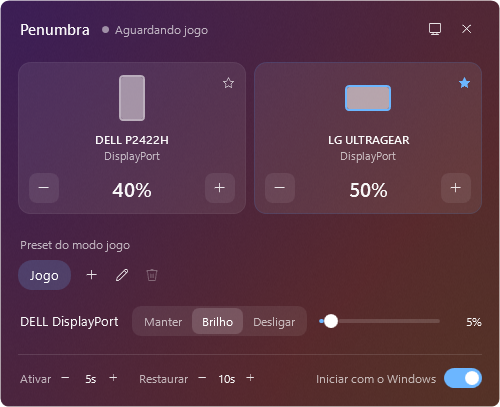

Controle de brilho com inteligência automática
O Penumbra percebe quando um jogo abre em tela cheia, escurece ou desliga seus monitores secundários e devolve o brilho quando você sai. Sem instalação: um único arquivo e pronto.

Menos luz ao redor, mais foco no jogo
Sem abrir menus de monitor no meio da partida: o Penumbra cuida disso por você.
-
Modo jogo automático
Detecta um app em tela cheia no monitor principal e aplica seu preset em segundos.
-
Brilho real do monitor
Muda o brilho pelo protocolo DDC/CI, direto no monitor, em vez de só colocar uma camada escura por cima.
-
Cada monitor do seu jeito
Em cada preset, escolha manter, definir um brilho ou desligar cada monitor secundário.
-
Volta sozinho
Ao sair do jogo, cada monitor retorna ao brilho padrão que você definiu nos cartões do widget.
-
Widget de vidro
Sem bordas e arrastável, com botões + e − para cada monitor. Fica escondido na bandeja do Windows.
-
Open source
Código aberto no GitHub. Sem anúncios, sem conta e sem coleta de dados.
Como funciona
Configure uma vez e esqueça.
-
Baixe e abra
Se o Windows avisar, clique em Mais informações → Executar assim mesmo. O widget aparece na tela.
-
Monte seu preset
Marque a estrela no monitor principal e escolha o que acontece com cada secundário durante o jogo.
-
Jogue
Abra o jogo em tela cheia. Os secundários escurecem sozinhos e voltam ao normal quando ele fecha.
Dúvidas frequentes
Preciso instalar o Penumbra?
Não. É um único arquivo Penumbra.exe com tudo embutido, inclusive o .NET. Basta baixar e abrir. Ele não pede permissão de administrador.
Meu monitor é compatível?
O monitor precisa aceitar DDC/CI, recurso comum em monitores externos e que às vezes precisa ser ligado no menu do próprio monitor. Telas de notebook, alguns adaptadores e algumas docks não oferecem esse controle. Quando não há resposta, o cartão mostra N/D.
O Windows mostrou “O Windows protegeu o computador”. É seguro?
Esse aviso do SmartScreen aparece para programas novos que ainda não têm assinatura digital. O código do Penumbra é aberto e o executável é gerado automaticamente no GitHub a partir dele, com o hash SHA-256 publicado em cada versão. Clique em Mais informações → Executar assim mesmo.
Ele mexe no jogo?
Não. O Penumbra só verifica se a janela ativa cobre o monitor principal. Ele não injeta nada no jogo e não lê a memória dele.
Vídeo em tela cheia também ativa o modo jogo?
Sim, porque a detecção é por tela cheia. Para assistir sem ativar, use Pausar detecção no menu do ícone da bandeja.
E se eu escolher “Desligar”?
Alguns monitores só voltam pelo botão físico, ou fazem o Windows mover as janelas abertas. Se isso acontecer com o seu, use brilho 0% no preset.
Como fecho o Penumbra?
O X do widget só o esconde. Para fechar de vez, clique com o botão direito no ícone da bandeja e escolha Sair.